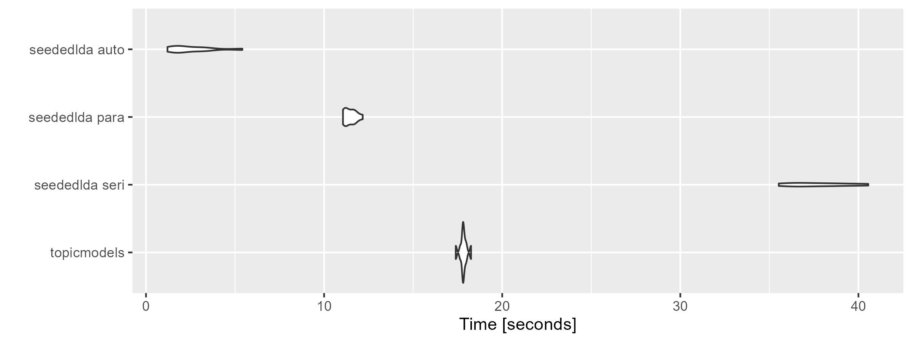
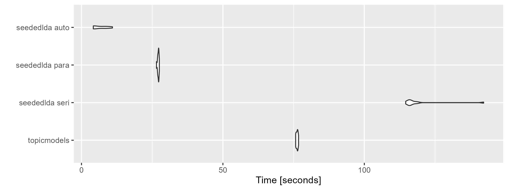

seededlda uses a Gibbs sampling-based generalized estimator for both Seeded LDA and Sequential LDA. These added functions make the package slower than the simpler topicmodels package. However, seededlda can be much faster when the parallel computing and the convergence detection are enabled.
We compare the execution time of seededlda on a laptop with AMD Rayzen 7 Pro (8 cores). For each setting, we repeat the estimation 10 times to measure the execution time accurately.
Preperation
We prepare the Sputnik corpus on Ukraine in the same way as in the introduction.
library(seededlda)
library(quanteda)
library(topicmodels)
library(microbenchmark)
library(ggplot2)
corp <- readRDS("data_corpus_sputnik2022.rds") |>
head(1000)
toks <- tokens(corp, remove_punct = TRUE, remove_symbols = TRUE,
remove_numbers = TRUE, remove_url = TRUE)
dfmt <- dfm(toks) |>
dfm_remove(stopwords("en")) |>
dfm_remove("*@*") |>
dfm_trim(max_docfreq = 0.1, docfreq_type = "prop")
tmmt <- convert(dfmt, to = "tm")Resutls
“seededlda auto” is the fastest because the parallel computing
(batch_size = 0.01) and the convergence
(auto_iter = TRUE) are enabled; “seededlda seri” is the
slowest because both are disabled; “topicmodels” is serial processing
but faster thanks to its simpler estimator. The difference between them
become greater when the number of topics is large
(k = 50).
microbenchmark(
"topicmodels" = LDA(tmmt, k = 10, method = "Gibbs"),
"seededlda seri" = textmodel_lda(dfmt, k = 10),
"seededlda para" = textmodel_lda(dfmt, k = 10, batch_size = 0.01),
"seededlda auto" = textmodel_lda(dfmt, k = 10, batch_size = 0.01, auto_iter = TRUE),
times = 10
) |>
autoplot(log = FALSE)
#> Coordinate system already present. Adding new coordinate system, which will
#> replace the existing one.
microbenchmark(
"topicmodels" = LDA(tmmt, k = 50, method = "Gibbs"),
"seededlda seri" = textmodel_lda(dfmt, k = 50),
"seededlda para" = textmodel_lda(dfmt, k = 50, batch_size = 0.01),
"seededlda auto" = textmodel_lda(dfmt, k = 50, batch_size = 0.01, auto_iter = TRUE),
times = 10
) |>
autoplot(log = FALSE)
#> Coordinate system already present. Adding new coordinate system, which will
#> replace the existing one.